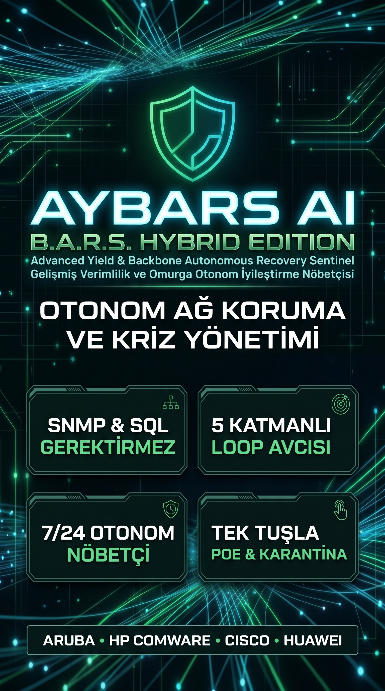

SNMP veya SQL veritabanı kurulumu gerektirmeyen, çoklu marka switch altyapılarıyla doğrudan CLI üzerinden konuşan, 5 katmanlı Loop Avcısı ve 7/24 otonom nöbetçi destekli yeni nesil ağ komuta ve kriz yönetim platformu.
Next-generation autonomous network protection and crisis command platform. Zero-SNMP, Zero-SQL, multi-vendor CLI abstraction featuring a 5-layer Loop Hunter, self-healing edge recovery, and 24/7 zero-noise alerting.

Hastane, kamu kurumu ve kurumsal kampüs ağlarındaki en zorlu saha krizlerini saniyeler içinde çözmek için tasarlandı.
Engineered to resolve critical real-world campus, healthcare, and enterprise LAN incidents in seconds.
Aruba AOS-CX (Bpdu-Error) ve HP Comware 7 (BPDU-Protection, STP Down-Port, Loopback-Detection) ile Self-LLDP köprülerini tarayarak döngü yapan portları nokta atışı yakalar.
Combines Bpdu-Error, Comware BPDU-Protection, STP Down-Port, Loopback-Detection, and Self-LLDP bridge inspection to catch loops instantly.
Switch sayaçları sıfırlanmasa bile iki tarama farkını hesaplar. TX kuyruk taşmalarını (Dropped 0) ve AP Giants (MTU 1500) paketlerini eler; sadece gerçek fiziksel kablo/SFP arızasını raporlar.
Computes exact counter deltas across scans, filtering out TX buffer drops (Dropped 0) and MTU Giants to alert only on true CRC/physical faults.
Donan IP kameraları ve Access Point'leri web ekranından tek tuşla elektrik kesip açarak resetler; ağı bozan uç portları anında karantinaya (Shutdown) alır.
Remotely power-cycle unresponsive PoE cameras and access points or quarantine rogue edge ports directly from the web console.
Fiber modüllerdeki Rx dBm zayıflamalarını (-14.5 / -17.0 dBm) kesinti yaşanmadan tespit eder. Merkez DHCP yetkisi olmadan statik IP/MAC çakışmalarını yakalar.
Monitors fiber optical power (dBm) and temperature to predict link drops, plus DHCP-less Core ARP conflict detection.
Tek bir IP veya MAC adresi girildiğinde Omurga ARP tablosunu çözer, Uplink portlarını otomatik eler ve cihazın bağlı olduğu kesin switch ile port numarasını tek satırda verir.
Resolves core ARP entries and filters uplinks automatically to pinpoint the exact access switch and port for any IP or MAC address.
Yapay zeka kök neden analizi, Türkçe sesli kriz anonsu, toplu komut (Mass-Config), otomatik .ZIP konfigürasyon yedekleme ve 7/24 HTML e-posta alarmları tek çatı altında.
AI-assisted root-cause summaries, voice crisis briefings, Mass-Config automation, one-click .ZIP backups, and silent 24/7 SMTP watchdog.
Karmaşık CLI çıktıları saniyeler içinde net, gürültüsüz ve eyleme hazır alarmlara dönüşür.
Raw multi-vendor CLI telemetry distilled into actionable, noise-free alerts in seconds.
| KriterCapability | Klasik NMS (SolarWinds / PRTG / Zabbix)Legacy NMS (SolarWinds / PRTG / Zabbix) | AYBARS AI [B.A.R.S. Hybrid] |
|---|---|---|
| Kurulum & BağımlılıkDeployment | SQL sunucusu, SNMP v2/v3 ve MIB derleme gerekir.Requires SQL database, SNMP setup, and MIB tuning. | SNMP & SQL Gerektirmez — 5 dakikada doğrudan SSH/Telnet ile çalışır.Zero-SNMP & Zero-SQL — Operational in 5 minutes via CLI. |
| Loop TespitiLoop Detection | Kapanan portu sıradan "Port Down" sanarak sessiz kalır.Treats error-disabled ports as ordinary link-down events. | 5 Katmanlı Avcı: Bpdu-Error, Comware BPDU-Protection ve Self-LLDP yakalar.5-Layer Hunter catches Bpdu-Error, BPDU-Protection & Self-LLDP bridges. |
| Alarm KalitesiAlert Precision | Küçük paket düşmelerinde yüzlerce sahte uyarı üretir.Alert fatigue from buffer drops and historical counters. | Deterministik Delta (+100 Eşik) ile sıfır gürültü ve gerçek CRC ayrımı.Deterministic Delta (+100 threshold) with zero-noise filtering. |
| Aktif MüdahaleActive Remediation | Sadece grafik çizer; müdahale için CLI açmak gerekir.Read-only graphs; requires external terminal sessions. | Tek tuşla PoE Şoklama, Port Karantina, Mass-Config ve .ZIP Yedek.One-click PoE Reset, Port Quarantine, Mass-Config & Backups. |
Hastane, kamu kurumu veya kurumsal kampüs ağınızı SNMP karmaşasına girmeden otonom koruma altına almak, canlı demo planlamak ve süreli kurumsal lisanslama bilgisi almak için doğrudan iletişime geçebilirsiniz.
Protect your hospital, public institution, or enterprise campus network autonomously without SNMP complexity. Reach out for a live walkthrough and commercial licensing options.